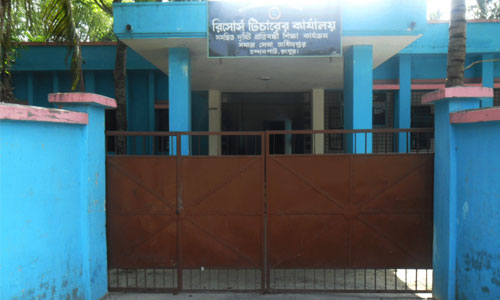
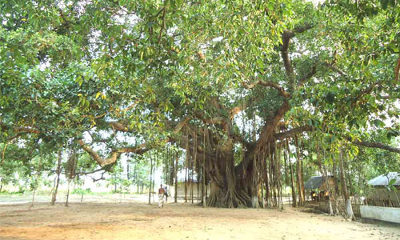

ইউনিয়ন পরিষদ থেকে রিক্সা, মোটর সাইকেল ভ্যান, অটো, কার মাইক্রোবাসে যাওয়া যায়। যেতে ১৫/২০ মিনিট লাগে।

ইউনিয়ন পরিষদ থেকে রিক্সা, মোটর সাইকেল ভ্যান, অটো, কার মাইক্রোবাসে যাওয়া যায়। যেতে ১৫/২০ মিনিট লাগে।
চন্দনপাট ইউনিয়ন থেকে শহরে যাওয়া রাস্তায় সুলতান মোড় নামক এলাকা গেলে পাওয়া যায় এই নদীর দেখা। রংপুরের মিঠাপুকুর ও সদর উপজেলার ২ সীমানার ওপর দিয়ে প্রবাহিত ঘাঘট নদী। আয়তনের দিক থেকে নদী তেমন প্রশস্ত ও গভীরতা না থাকলেও ভাঙন উল্লেখযোগ্য হারে বাড়ছে। স্রোতের গতিতে তেমন মনে হয় না এ নদীর ভাঙন এমনটা হবে। কর্তৃপক্ষের উদাসীনতার কারণে অবৈধভাবে বালু উত্তোলনের ফলে নদীর গতি পরিবর্তন হয়ে একদিকে কৃষকের চাষাবাদীয় হাজার হাজার বিঘা জমি নদীগর্ভে বিলিন হয়ে যাচ্ছে। পাশাপাশি বাড়ছে ভাঙনে ঘরবাড়ি বিলিনের হার। সরেজমিন গিয়ে দেখা যায়, সদরের ধর্মদাস লক্ষণপাড়া, মগলেবার, ইসলামপুর, খোর্দ্দমুরাদপুর, ভাংনী, কাগজি পাড়া, দরজি পাড়া, ঠাকুরবাড়ি, চানপুর, দলশিংপুর, বেনীপুর, ত্রিমহনীফতেপুরসহ বিভিন্ন স্থানে নদীর ভাঙনের ফলে ঘরবাড়ি বিলিন হয়ে যাচ্ছে। সেই সঙ্গে গৃহহারা হয়ে পড়েছে অনেক পরিবার।